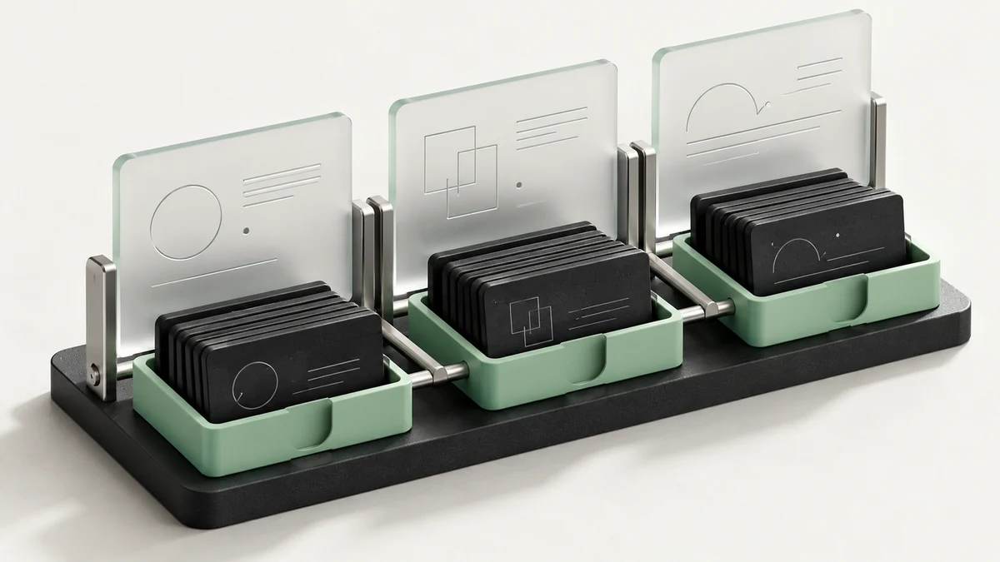
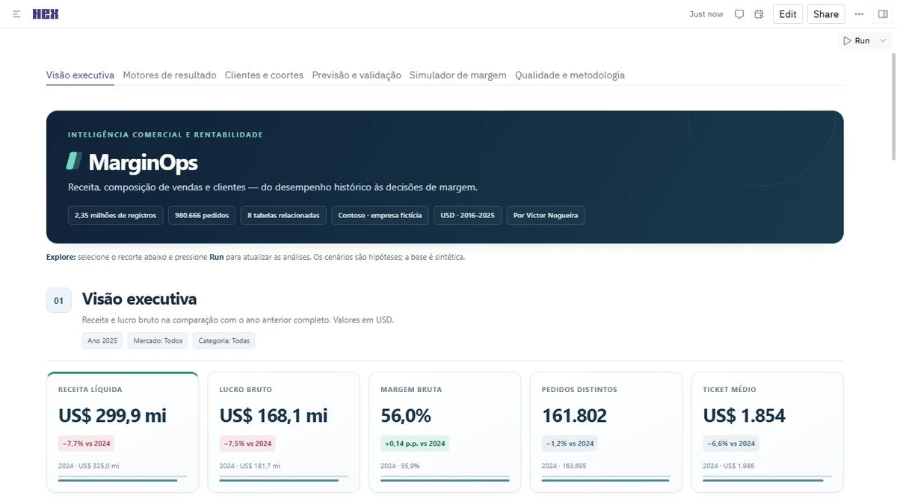

SignalPath Growth Intelligence
Demonstra análise de funil, aquisição, comportamento, retenção e reconciliação de métricas com dados públicos do GA4.
Explorar demonstraçãoAnalista de Dados e BI com experiência profissional em dashboards, métricas, tratamento e validação de dados. Minha formação em Ciências Contábeis acrescenta visão financeira, atenção a controles e compreensão dos processos por trás dos números.
Tenho experiência profissional como Analista de BI Júnior, atuando no desenvolvimento e na manutenção de dashboards no Power BI para análises operacionais e financeiras. Trabalhei com extração e tratamento de dados utilizando SQL, Power Query e processos de ETL, além da criação de métricas em DAX. Também realizei validação de informações, identificação e correção de inconsistências, documentação de projetos e suporte relacionado aos relatórios e indicadores desenvolvidos.
Construção e manutenção de análises operacionais e financeiras no Power BI.
Extração, tratamento e organização utilizando SQL, Power Query e ETL.
Validação de informações, identificação de divergências e correção de inconsistências.
Métricas em DAX, documentação de projetos e suporte relacionado aos relatórios.
Demonstra análise de funil, aquisição, comportamento, retenção e reconciliação de métricas com dados públicos do GA4.
Explorar demonstraçãoDemonstra planejamento de demanda e estoque, avaliação de previsões e cenários transparentes de reposição.
Explorar demonstração
Classificação semântica de relatos no navegador, revisão de categorias, comparação com regras e evidências.
Explorar demonstraçãoInvestigação de cargas, prioridade por regras, recuperação hipotética de atrasos e evidências exportáveis. Base sintética; funciona online sem instalação.
Explorar demonstraçãoConciliação de dois CSVs com cálculos em centavos, diferenças por registro, simulação de definições e exports reproduzíveis.
Explorar demonstração
Análise empresarial nativa no Hex: 2,35 milhões de itens, métricas conciliadas, preço-volume-mix, coortes, validação de previsão e cenários de margem. Empresa fictícia.
Explorar no Hex